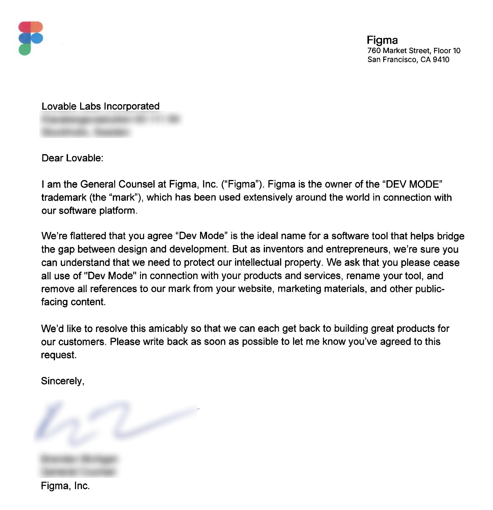

Disclaimer: I am not a lawyer or journalist, might be wrong about things
You may have seen this letter from Figma about the "Dev Mode" trademark:

From this tweet.
The USPTO case for "DEV MODE" is at: https://tsdr.uspto.gov/#caseNumber=98045640&caseSearchType=US_APPLICATION&caseType=DEFAULT&searchType=statusSearch
Initially, my thought was:
Figma trademarked "Dev Mode"? That's insane, it's been used by everyone for longer than my lifetime!
However, a reddit comment mentioned it's actually on the Supplemental register. The most important thing you don't get with a trademark on the supplemental register is the "presumption of the exclusive right to use the mark in association with the identified goods and services throughout the United States." [1]
Actually, the USPTO defines [2]:
The Supplemental Register is a listing of non-mark designations (such as descriptive words) that are “capable” of eventually becoming a “mark.” That is, a designation on the Supplemental Register is not a “trademark” yet
I found this interesting, because from what I thought I knew about trademarks, the whole point is that you get exclusive use. I'm from the UK, so I wasn't completely wrong, because the UK doesn't have a supplemental trademark register. Sure enough, the "Dev Mode" trademark was refused in the UK. [3]
Other important information is: Mark Drawing Type: STANDARD CHARACTER MARK This means it's a trademark for the words "Dev Mode", not a logo or design. The other types are [4]:
The fact "Dev Mode" is on the Supplemental register is an admission the trademark is weak and descriptive.
I think the fact that Figma know "Dev Mode" is probably the weakest "trademark" (or non-mark designation) you could have, yet still sent Lovable a formal letter, is ridiculous, and deserved the negative publicity. The only reason to try to get people using your non-mark designation from the supplemental register is to hope that it becomes a strong trademark over time [1]. This is completely unrealistic in this particular case, which isn't a good look for Figma.
The USPTO trademark for "CONFIG" is at: https://tsdr.uspto.gov/#caseNumber=88673913&caseSearchType=US_APPLICATION&caseType=DEFAULT&searchType=statusSearch
Again on first glance, this seems outrageous.
However, the class under "Goods and Services" is important, as it limits the scope.
For: Arranging, organizing and providing on-line and in-person interactive training classes, workshops, educational conferences, seminars, courses, educational meetings in the field of digital design, and collaboration and technology as it relates to digital design
This means you're still free to use the word Config for purposes other than the above.
This is also a UK registered trademark [5]
[1] https://www.brownwinick.com/insights/the-supplemental-register-what-is-it-how-is-the-supplemental-register-different-than-the-principal-register
[2] https://www.uspto.gov/trademarks/apply/definitions-responding-uspto-office-action#supplemental
[3] https://trademarks.ipo.gov.uk/ipo-tmcase/page/Results/2/WO0000001774860
[4] https://tradesnark.com/deep-dive-a-guide-to-the-uspto-mark-drawing-codes/
[5] https://trademarks.ipo.gov.uk/ipo-tmcase/page/Results/1/UK00918221613
{kind=link}